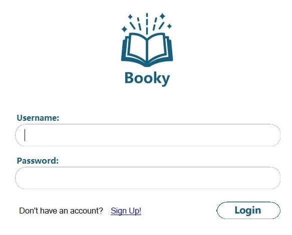

User Guide
Welcome to the Booky User Guide! This guide is designed to help users navigate and utilize the
various features of the application effectively. Whether you are browsing the book catalog,
managing your wishlist, or exploring personalized recommendations, this guide provides
step-by-step instructions to ensure a seamless experience.
By following the sections outlined in this guide, you’ll learn how to make the most of Booky,
from searching for books to adding them to your wishlist, and understanding the recommendations
tailored to your preferences. Let this guide be your companion as you explore all that Booky has to offer.

Login
Users are welcomed to the application with a simple and navigable login page. New users click the blue 'Sign Up!'
link to be forwarded to the registration page.
All that is required is a unique username and a password. All passwords
are securely hashed and salted to protect user data. Once registered, the user will be brought back to the login page,
from there enter the credentials and be forwarded to the main dashboard.
Dashboard
The section below breaks down the main components of the dashboard, they do not move regardless of where you are in the application
so it is important to become familiar.
Side Navigation Menu
The side navigation menu allows you to easily access different sections of the dashboard.
Here's a breakdown of its components:
Booky Logo: Click the logo at the top of the side navigation to return to the Home page at any time.
Popular Now: Explore products that are trending and currently popular among users.
Best Sellers: Discover the best-selling products on the platform.
For You: Get personalized recommendations based on your preferences and activity.
Categories: Browse products by different categories to find exactly what you're looking for.
Authors: Search for products by your favorite authors and discover new ones.
Publishers: Find products from various publishers.
Order History: View a detailed history of your past orders.
Wishlist: Access your wishlist to see all the products you've saved for later.
Top Navigation Menu
The top navigation menu provides quick access to essential features and helps you navigate back when needed.
Back Arrow: Use the back arrow to return to the previous page you were viewing.
Search Bar: Use the search bar to find products by their title. Enter your query and hit enter to see the results.
Wishlist Icon: Click this icon to quickly access your wishlist.
Cart Icon: View the contents of your cart by clicking this icon.
Order History Icon: Directly navigate to your order history with this icon.